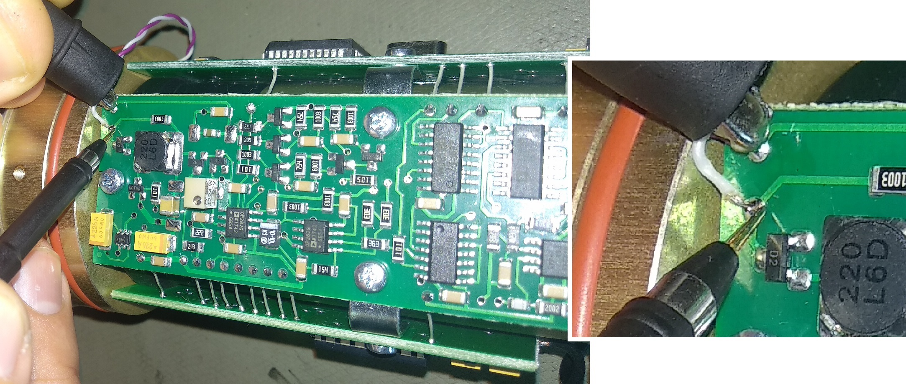
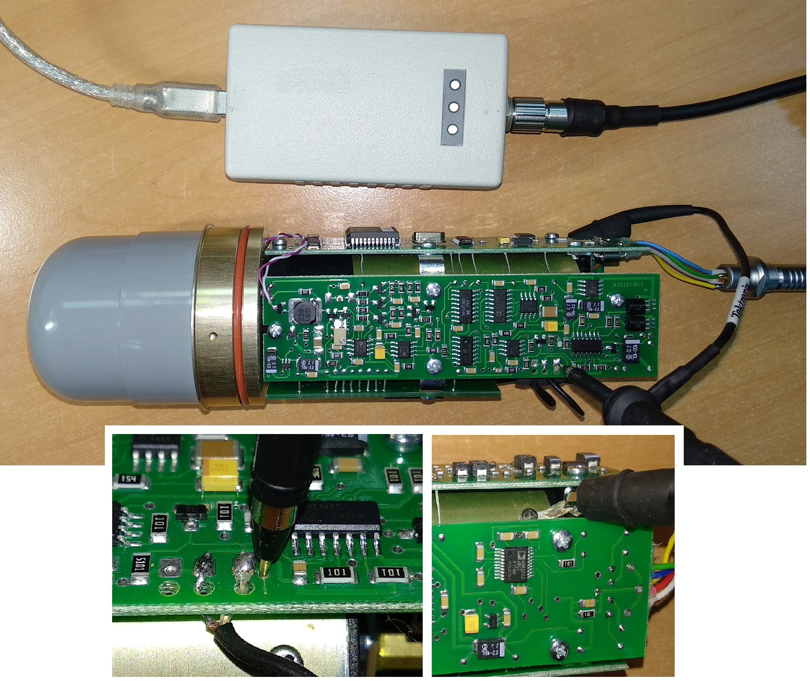

БДКГ-04
1. Наклеить на прибор наклейку с номером. В базу настройки БДКГ-04 и в перечень записать дату настройки, серийный номер и ФИО регулировщика.

2. Прошить блоки
3. На плате преобразователя напряжения заменить резисторы R20 и R31
Во избежания колебаний показаний в точке 700 мЗв в 3-м диапазоне (плавают от 680 до 820 мЗв), на плате преобразователя напряжения заменить резистор R20 с 30 кОм на 20 кОм и резистор R31 с 150 кОм на 330 кОм. Это уменьшит колебания высокого напряжения, "успокоит" прибор.4. Перепроверить установленные коэффициенты:
Должны стоять такие коэффициенты:
1U
0.5
2U
0.5
3U
1.0
4U
1.0
5U
1.0
Подключить БД к технологическому БОИ
- При включении нажать и удерживать кнопку
- Нажать три раза , на экране появится "---":
- Два раза нажать кнопку
- Набрать "718", для этого с помощью клавиш и выбирается цифра, а с помощью выбирается следующая позиция
- После ввода последней цифры, нажать
- Нажать и удерживать кнопку , появится ".1."
- Нажимая кнопку , выбрать седьмой режим
- Переключение коэффициента осуществляется кнопкой , значение коэффициента изменяется кнопками и
Должны стоять такие коэффициенты:
| 1U | 0.5 |
| 2U | 0.5 |
| 3U | 1.0 |
| 4U | 1.0 |
| 5U | 1.0 |
5. Записать внутренние номера и дату. Проверить отсутствие срыва светодиодной стабилизации.
- Подключить БД к адаптеру USB
- Запустить программу BackgroundCalibration. Дозиметр подключится автоматически
- Нажать "Запись идентификационных данных"
- Записать серийный номер, месяц и год производства

Если перед тем, как нажать "Запись..." НЕ выделять строку с прибором,
Background сам подставит сегодняшнюю дату
- В окне программы не должно быть такого сообщения:
6. Поставить на приработку на 20 часов
7. Проверить ток потребления: должен быть примерно 20 мА
Для того, чтобы измерить ток, у меня есть специальный адаптер USB с разрывом питания и выходом на мультиметр:
8. Проконтролировать напряжение и форму пробоя светодиода в 1 и 3 диапазоне.
-
Для этого:
- С помощью осциллографа проверить сигнал светодиода. 
- Максимальная амплитуда сигнала не должна превышать 100В и иметь такую форму(обязательно иметь "горб"[1] и длинный "спад"[2]):
- То же сделать для 3-го диапазона
- Разница между амплитудами первого и третьего диапазона не должна превышать 30 В
- Значение напряжения диода для 3-го и 1-го диапазона записать в базу настройки

9. Установить Uвыс резисторами R7 и подстроечным R8 на плате преобразователя напряжения по
показаниям от ОСГИ 137Cs:
Ошибка загрузки
Проверить скорость счета от 137Cs во втором диапазоне,
должна быть примерно 2 имп/с
- Закрепить источник ОБЯЗАТЕЛЬНО латунной пластинкой к прибору
и со снятым колпачком

- Подключить БД через адаптер USB к компьютеру:
- Запустить Background Calibration
- С помощью подбора номинала резистора R7 (грубо) и регулировкой подстроечного резистора R8
(точно)добиться показаний от источника 137Cs:
Ошибка загрузкиЧтобы не подбирать номинал резистора наугад, можно воспользоваться такой формой (пока считает не точно, мало статистики):
- Проверить скорость счета от 137Cs во втором диапазоне, должна быть примерно 2 имп/с
- Замерить напряжение на среднем выводе подстроечного резистора R8:
- Записать в базу настройку полученную м.д. по 137Cs, сопротивление R7 (кОм), напряжение на среднем выводе R8 (В):


10. Установить показания прибора от ОСГИ 109Сd 1079 резисторами R24 на плате
усилителя-преобразователя импульсов:
Ошибка загрузки
- Закрепить источник ОСГИ 109Сd 1079 на БД без колпачка
- С помощью подбора номинала резистора R24 на плате усилителя-преобразователя импульсов добиться такого значения мощности дозы:
- Чтобы увеличить значение м.д. сопротивление резистора нужно уменьшить, и наоборот
- Записать в базу настройки номиналы R24 и значение м.д. от 109Сd
Ошибка загрузки

11. Проконтролировать напряжение на выводе D4.1 на плате преобразователя напряжения в 3 диапазоне.
- Подключить БД к компьютеру через адаптер USB
- Запустить Background Calibration.
- Проверить напряжение в первом диапазоне на 1-ом выводе D4.1 на плате преобразователя напряжения в первом и 3-ем диапазоне. (3-ий диапазон переключается в BCalibration кнопкой )
- Значения обоих напряжений и номинал резистора R24 записать в базу настроек В 3-ем диапазоне значение напряжения должно составлять 4.7-5В. Регулировка напряжения в 3 диапазоне осуществляется подбором номинала резистора R24 на плате преобразователя.
Примерно такие номиналы:
- 5,6 В — 11кОм
- 4,3 В — 5,6кОм
- 4,6 В — 7,5кОм
12. Настроить напряжение 3-го диапазона
- Осциллографом замерить напряжение на высоком (в 1-м диапазоне):  Смотреть значение "Размах":
- Высокое будет "прыгать", поэтому удобнее на осциллографе установить режим "Усреднения"
Что ещё за усреднение?
Для этого на осциллографе нажать "Сбор данных" [A], выбрать "Среднее" [B], выставить "Усреднение" равным 128, нажать "Измерения" [C]
- Записать в базу настройки напряжение высокого 1-ом диапазоне
- В ячейке "Расчет" отобразится значение напряжения на высоком в 3-м диапазоне
- Переключится в 3-й диапазон и сравнить напряжение на высоком с расчетным
- Если напряжение примерно совпало, идём дальше, если нет — корректируем. Для этого необходимо подобрать резистор R27 . Отклонение от расчетного значения не должно превышать 0,6-0,8 В
- Чтобы увеличить, надо уменьшить и наоборот
- Записать в базу настройки напряжение высокого 3-ем диапазоне
- Записать в базу настройки номинал резистора R24
13. Проверить отсутствие показаний прибора во 2 и 3 диапазоне на фоне
Если во 2 диапазоне на фоне есть показания, то на плате преобразователя тока регулируем R5 (R5 уменьшаем на 1 номинал).14. Приработать не менее 40 часов.
15. Перепроверить показания по 137Сs и
109Cd, и напряжение выв.1 D5.1 на плате преобразователя напряжения.
Если прирабатывать приборы ДО регулировки, то перепроверять показания уже будет не
нужно!!!
16. Отдать на линейку.
17. После того, как вернулись с линейки
- 1. Если прибор пришел с линейки с нормальным коэффициентом 3-го диапазона (100-160), а в точке 10 Зв счет составляет [n-1(10Sv\h), кило] 32, это свидетельствует о недостаточной яркости свечения светодиода в 3-м диапазоне. Рекомендуется заменить светодиод.